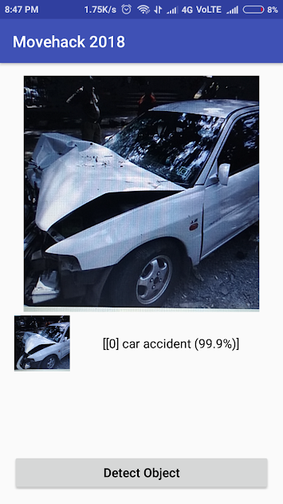

Alert Notifications
Reducing Road Fatalities on Indian Roads from 31% to 0%
An intelligent, real-time AI computer vision system designed to detect accidents immediately on traffic cameras and orchestrate instantaneous multi-agency emergency response (Ambulances, Hospitals, and Police).

The Critical Problem
Every minute counts in saving a human life after a high-impact crash.
480,652
Annual Road Accidents
Based on Ministry of Road Transport and Highways (MoRTH) reports.150,785
Fatalities Per Year
A staggering death ratio of 31.37% due to delayed emergency response.0%
Target Death Ratio
Our vision: instant alert triggering, ambulance dispatch, and hospital pre-alerting.How AI Closes the Response Gap
In India, the golden hour—the first hour after a traumatic injury—is frequently lost in heavy traffic, bystander delays, and manual communication loops. By deploying computer vision at scale on highway and arterial street cameras, the SURE platform automatically detects accidents within milliseconds of impact.
Once confirmed, the system communicates with emergency response partners: alerting the closest ambulance, notifying regional traffic police, and warning nearby hospital emergency rooms with crash data and estimated arrival times.
Computer Vision Detection
TensorFlow models process surveillance camera feeds in real time to classify vehicle crashes.
Emergency Validation
Results panel displays severity metrics, coordinates, and classification confidence logs.
Automated Dispatch
Instant SMS, Webhook, and system pre-alerts are transmitted to rescue response teams.
Key Features of the System
Cutting-edge features built to safeguard citizens and streamline traffic monitoring.
Indian Road Optimization
Custom-trained model optimized for chaotic traffic, weather variations, and infrastructure conditions in Indian metropolises.
Multi-Channel Monitoring
Processes video uploads, images, and live CCTV feeds from cameras, switching interfaces dynamically.
Tri-Agency Alerting
Simultaneous dispatch console updates ambulance dispatch centers, local police divisions, and hospital trauma units.
Hotspot Analytics
Aggregates historical data to identify critical crash zones, aiding urban planners in engineering safer intersections.
Local Storage Integrity
Maintains persistent local logs of all detections, scores, and actions to ensure audit trails remain intact.
Customizable Thresholds
Allows operators to scale AI confidence thresholds (e.g. 60%) to balance sensitivity and false-alarm frequency.
Project Technology Stack
High-performance backend and mobile framework powering the SURE system.
Python Core
Object classification scripts
TensorFlow
Object Detection API Graph
Android App
Mobile camera detection client
Flask Server
API Gateway Integration
Project Team
Developers & Research Engineers pioneering intelligent transport safety systems.
Rohan Sharma
AI Research & Model Training
Priya Patel
Android Client Development
Aarav Mehta
Emergency Integration Architect
Integrate SURE in Your City
Contact us to connect municipal CCTV cameras or deploy mobile vehicle safety apps.
Drag & Drop Image Here
Supports JPG, JPEG, PNG (Max 10MB)
orDrag & Drop Traffic Video
Supports MP4, AVI, MOV (Max 50MB)
orLive CCTV Stream Connected
Monitoring critical highway node for accidents.
Live monitoring active
Detection Result Panel
No active feedNO INCIDENT DETECTED
System monitoring. Ready for traffic analysis.
Emergency Alert Console
LOCKED - NO INCIDENTAmbulance Services
108 Emergency MedicalTraffic Police Command
100 Control RoomTrauma Care Unit
Fortis Malar Emergency1,424
CCTV Hours Audited
352
Accidents Flagged
348
Saved Lives
7.8m
Avg Emergency Response
Accident Hotspots Map (Chennai Zone)
Live GIS LayersMonthly Accident Detection Trends
Incident Severity & Class Distribution
AI Model Performance Metrics
VGG16-SSD v2System Detection Logs
View, filter, and export incident details saved in Local Storage.
| Timestamp | Feed Source | Accident Status | Confidence | Severity | Location | Emergency Dispatch | Action |
|---|---|---|---|---|---|---|---|
| No detections stored in history database. | |||||||
Academic Project Overview
The core algorithm operates on the TensorFlow Object Detection framework, incorporating transfer learning to detect road crashes under challenging road and lighting conditions.
Problem Formulation & Relevance
According to research issued by the Transport Research Wing, road accidents claim over 150,000 lives annually in India. Over 31% of these fatalities are attributed to delays in medical intervention. The SURE framework attempts to tackle this problem by automating the detection process and connecting CCTV camera grids directly to dispatch agencies, skipping manual calling queues.
Surveillance Grid Orchestration
By deploying deep learning at scale on municipal highway cameras, SURE detects accidents within milliseconds of impact. Once confirmed, the system communicates with emergency response partners: alerting the closest 108 ambulance, notifying regional traffic police, and warning nearby hospital trauma rooms with crash data and estimated arrival times.
Indian Road Optimization Challenges
Typical models trained on Western datasets perform poorly under Indian road conditions due to high vehicle density, mixed lane behaviors, and high frequency of motorized two-wheelers. To resolve this, training inputs are augmented with annotated samples of local Indian roads containing mixed vehicle classes and weather constraints.
classifier.py Source Code
Fetched dynamically from workspace: `Python Demo/classifier.py`
Loading source code...
Original Model Run Execution Log
Fetched dynamically from workspace: `Python Demo/run.log`
Loading execution logs...
GNU Affero General Public License v3.0
Fetched dynamically from workspace: `LICENSE`
Loading project license...
Indian Road Accident Dataset (IRAD-Custom)
The dataset was specifically annotated to capture vehicle collisions under chaotic traffic and infrastructural conditions common in Indian metropolitan zones.
5,500+
Annotated Image Frames
Representing multi-lane road networks.80 / 20
Train / Test Split Ratio
Divided into TFRecord structures.1
Target Class ('car accident')
Defined in accidents.pbtxt.Annotation & Format Pipeline
The bounding boxes are defined according to the Pascal VOC XML structure, mapping each label coordinate to target objects. The source annotations are compiled into TensorFlow records (`train.record` and `test.record`) for high-throughput GPU ingestion during the 200,000 steps training loop.
Class Labels Mapping (accidents.pbtxt)
item {
id: 1
name: 'car accident'
}
Sample Pascal VOC Annotation XML
<annotation>
<folder>images</folder>
<filename>accident_104.jpg</filename>
<size>
<width>300</width>
<height>300</height>
<depth>3</depth>
</size>
<object>
<name>car accident</name>
<bndbox>
<xmin>38</xmin>
<ymin>104</ymin>
<xmax>265</xmax>
<ymax>290</ymax>
</bndbox>
</object>
</annotation>
Dataset Visual Sample

SSD MobileNet V1 Architecture
SURE incorporates Single Shot Multibox Detector (SSD) alongside a MobileNetV1 feature extractor to minimize on-device inference latency.
Network Hyperparameters
Mathematical Formulation
The model is trained to minimize a combined multi-task loss function:
Where N is the number of matched default boxes, L_loc is the localization smooth L1 loss, L_conf is the classification cross-entropy confidence loss, and α is a weight term (set to 1.0).
Compile Incident Report
No Report Generated
Please select a verified accident event from the left panel and click compile to generate a municipal incident summary sheet.